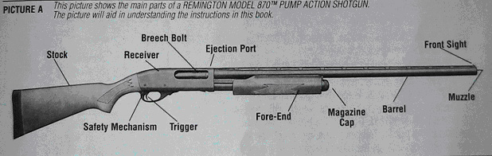

Дробовик Remington 870
Remington 870 — американский дробовик, впервые представленное в 1950 году компанией Remington Arms. Remington 870 благодаря своей характерной перезарядке является одним из самых знаменитых помповых ружей в мире. Remington 870 выпускался в различных модификациях, он подходит как для военных и полиции, так и для охотников и спортсменов, а также для самообороны. Полицейские модификации обычно имеют ствол длиной 355 или 457 миллиметров со сверловкой «цилиндр» или «улучшенный цилиндр», позволяющей стрелять как картечью, так и пулей, а также различными специальными боеприпасами, типа газовых гранат или резиновых травматических пуль.
Назначение симулятора
Назначение симулятора сборки/разборки и стрельбы из Remington 870 состоит в обучении пользователям навыкам работы с дробовиком Remington 870. Этот симулятор предоставляет возможность пользователям изучить структуру и компоненты дробовика Remington 870, освоить технику сборки и разборки оружия, а также попрактиковаться в виртуальной стрельбе, эмулирующей реалистичные условия использования оружия. Целью установки является обучение пользователей безопасному и эффективному использованию дробовика Remington 870, повышение их навыков обращения с оружием, а также улучшение понимания работы и функциональных возможностей данного типа оружия.
История создания
Работа над Remington 870 началась в конце 1940-х годов. Компания Remington Arms, известная своими инновационными ружьями, стремилась создать новый дробовик, который был бы надежным, удобным в использовании и имел бы широкий спектр применения.
В течение нескольких лет инженеры Remington работали над разработкой и усовершенствованием дизайна дробовика. Они проводили множество тестов и модификаций, чтобы создать оружие, которое бы удовлетворяло требованиям как охотников, так и правоохранительных органов.
В 1950 году Remington 870 был впервые представлен на рынке. Его простота конструкции, надежность и доступная цена сразу привлекли внимание охотников, стрелков и правоохранительных органов. Вскоре он стал одним из самых популярных дробовиков в мире.
Основные модули и принципы работы установки
Модуль симуляции Remington 870: Этот модуль включает в себя виртуальное моделирование структуры и компонентов дробовика Remington 870. Он предоставляет пользователю возможность взаимодействовать с оружием в виртуальной среде, изучать его детали и характеристики. Модуль сборки/разборки: Этот модуль позволяет пользователям учиться собирать и разбирать дробовик Remington 870. Он предоставляет детальные инструкции по сборке и разборке каждого компонента, помогая пользователям лучше понять структуру и функционирование оружия. Модуль стрельбы: Этот модуль предоставляет пользователю возможность виртуальной стрельбы из дробовика Remington 870. Включая симуляцию различных режимов стрельбы, прицеливания и контроля за огневыми характеристиками. Пользователи могут практиковать навыки обращения с оружием и улучшать свою меткость и точность.
Как он устроен?
Действие затвора: Дробовик Remington 870 функционирует на основе системы с затвором, который перед выстрелом закрывается. Этот механизм играет ключевую роль в обеспечении надежного удержания давления газов, образующихся при выстреле, в стволе. Такая конструкция повышает безопасность и эффективность стрельбы.
Ударно-спусковой механизм: Оснащенный ударно-спусковым механизмом, дробовик Remington 870 позволяет пользователю контролировать момент выстрела. Этот механизм может быть настроен для одиночного или многозарядного огня, в зависимости от модели. Это обеспечивает большую гибкость при использовании оружия в различных ситуациях.
Боевая пружина: Внутри ствольной коробки располагается боевая пружина, которая обеспечивает механизм затвора энергией для перезаряжания после каждого выстрела. Это важное устройство гарантирует надежную работу оружия и его готовность к следующему выстрелу.
Магазин: Remington 870 оснащен сменным магазином, который может содержать различное количество дроби или патронов, в зависимости от модификации. Магазин может быть установлен под стволом или боковым способом. Его конструкция может варьироваться в зависимости от предпочтений и потребностей пользователя.
Цевье и приклад: Цевье и приклад дробовика служат для удержания и стабилизации оружия во время стрельбы. Они также обеспечивают комфорт и удобство при использовании, позволяя стрелку эффективно контролировать оружие и достигать высокой точности при стрельбе.
Механизм перезарядки: После выстрела механизм затвора перемещается назад, выбрасывая использованный патрон из ствола, и затем возвращается вперед для загрузки нового патрона из магазина. Этот процесс основан на точной механике и обеспечивает быструю и надежную перезарядку оружия.
Применение установки в работе
Охота: Remington 870 является популярным выбором среди охотников благодаря своей надежности, простоте использования и многофункциональности. Он может быть использован для охоты на различных видов дичи, включая птиц и крупных зверей.
Тактическое использование: В силу своей компактности и маневренности, Remington 870 широко применяется в тактических ситуациях. Он может быть использован силами правопорядка, специальными подразделениями и вооруженными силами для обеспечения безопасности и выполнения специальных задач.
Спортивная стрельба: Многие любители стрельбы предпочитают Remington 870 для участия в спортивных соревнованиях по стрельбе из дробовика. Его точность, надежность и возможность быстрой перезарядки делают его отличным выбором для соревнований различного уровня.
Личная оборона: Remington 870 может быть использован для личной обороны и защиты дома благодаря своей высокой огневой мощи и простоте использования. Многие люди используют его в качестве средства самозащиты для защиты себя и своих близких.
Военное применение: Вооруженные силы многих стран используют Remington 870 в качестве служебного оружия благодаря его надежности и эффективности в боевых условиях. Он может быть использован для различных задач, включая патрулирование, охрану и боевые операции.
Получаемая в результате использования установки продукция
Повышение квалификации и навыков: Пользователи получают возможность повысить свою квалификацию и навыки обращения с оружием, включая знание структуры, сборки/разборки и стрельбы из дробовика Remington 870. Улучшение эффективности: Установка способствует улучшению эффективности обучения и тренировок в области военной и правоохранительной подготовки, что может привести к повышению профессионализма и безопасности в работе с оружием.
Достоинства
- Надежность: Remington 870 славится своей высокой надежностью и долговечностью. Это проверенное временем оружие, которое работает надежно даже в самых экстремальных условиях.
- Многофункциональность: Этот дробовик предлагает широкий выбор моделей с различными характеристиками, длиной ствола и магазинной ёмкостью, что делает его универсальным и подходящим для различных задач, включая охоту, тактическое использование, спортивную стрельбу и личную оборону.
- Простота использования: Remington 870 легок в обращении и прост в обслуживании. Его конструкция понятна и интуитивно понятна даже для новичков, что делает его популярным среди широкого круга пользователей.
- Доступность и широкое распространение: Этот дробовик широко доступен на рынке и имеет большое количество запасных частей и аксессуаров, что делает его привлекательным выбором для многих.
Недостатки
- Вес и габариты: Некоторые модели Remington 870 могут быть довольно тяжелыми и громоздкими, особенно с длинными стволами и большой магазинной ёмкостью, что может быть неудобно при длительном ношении или использовании.
- Ограниченная магазинная ёмкость: Некоторые модели Remington 870 имеют ограниченную магазинную ёмкость по сравнению с другими дробовиками на рынке. Это может потребовать более частой перезарядки, особенно в тактических сценариях.
- Ограниченные возможности настройки и модификации: По сравнению с некоторыми другими дробовиками, Remington 870 может иметь ограниченные возможности настройки и модификации, что может ограничивать его приспособляемость к индивидуальным предпочтениям и потребностям пользователя.